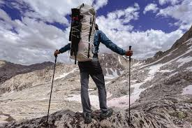

Swimming

Hiking
Snooker
The city of Mombasa and it's environs is a go to destination for me. The beaches in Diani would be my first stop.
The Ol Pejeta Conservancy, Mt Kenya, Ngare Ndare Forest, Loldaiga Caves among others.
I know Nanyuki as a gateway to Mount Kenya and the wilderness of Mount Kenya National Park. It sits on
the equator, 3 hours north of Nairobi. Its elevation of 2000 metres means it is colder and wetter than
the rest of Kenya. Nanyuki is the largest town in the area, settled by British immigrants and still
favoured by their descendants. Business in the area comes from ranches, farms, and game parks, or the
supply of goods to them. Tourism is huge as there is a lot to see and do in Nanyuki.
When you journey into Chalbi Desert, prepare yourself for an eerie landscape edged by rocky lava flows, cracked earth and a sandy mixture of white salt and clay across which your guide carefully drives through. Even in this barren and desolate location, you may see a shadow emerge in the distance, as ostriches, grevy’s zebras, oryx and other adapted animals are often observed in the desert. Amazingly, spotted hyena have been seen too.